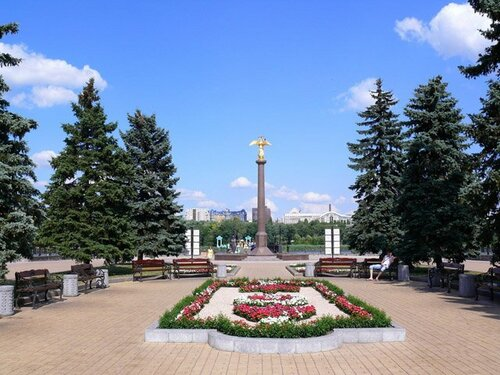
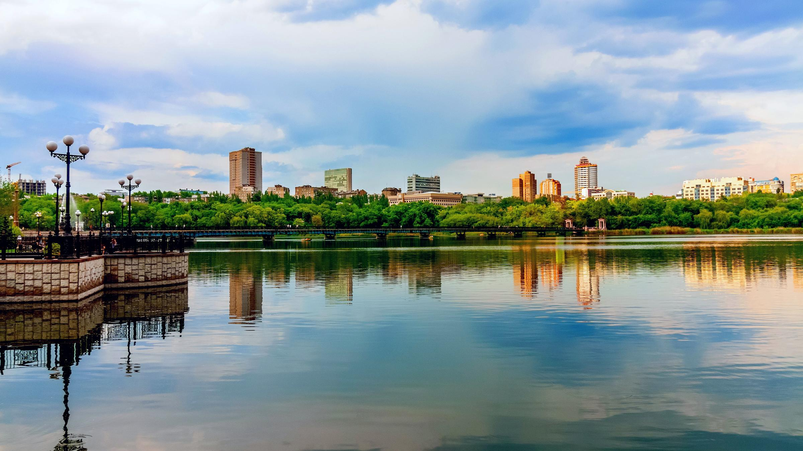
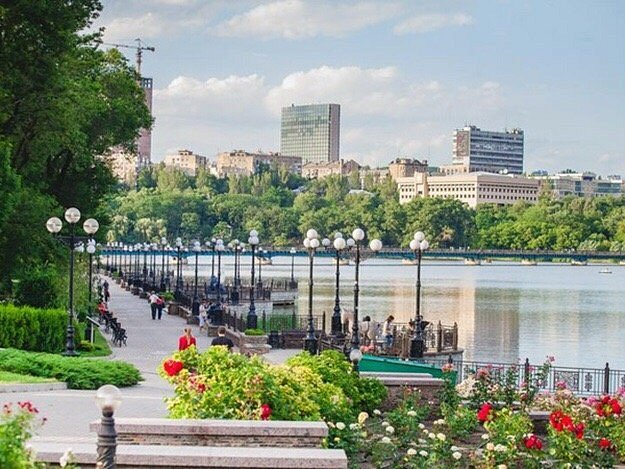
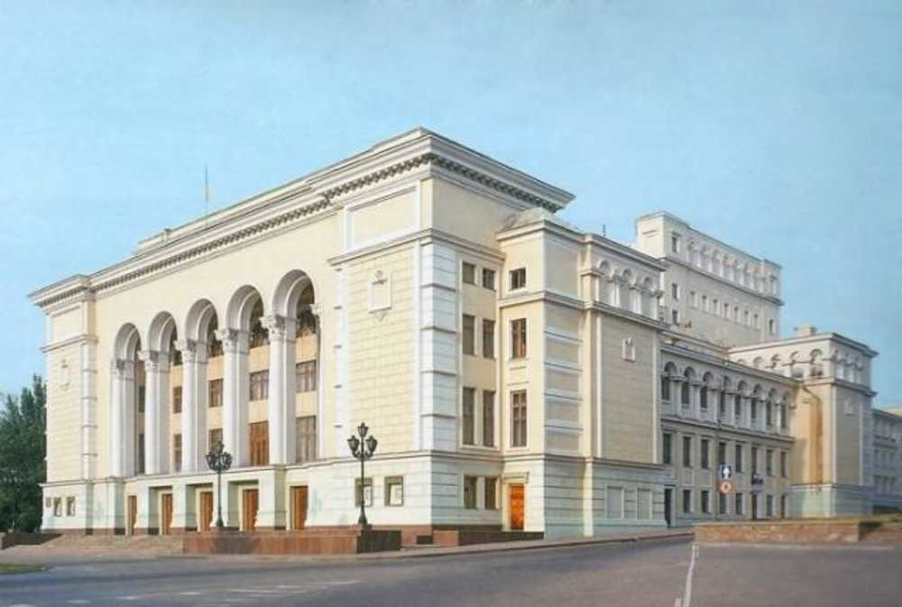
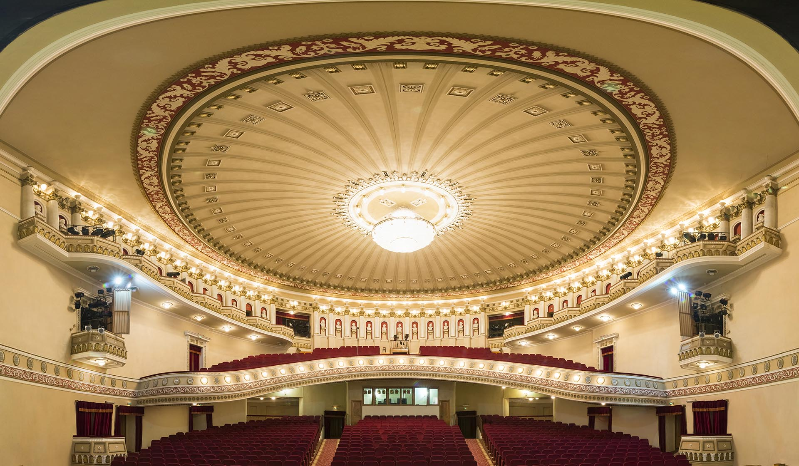
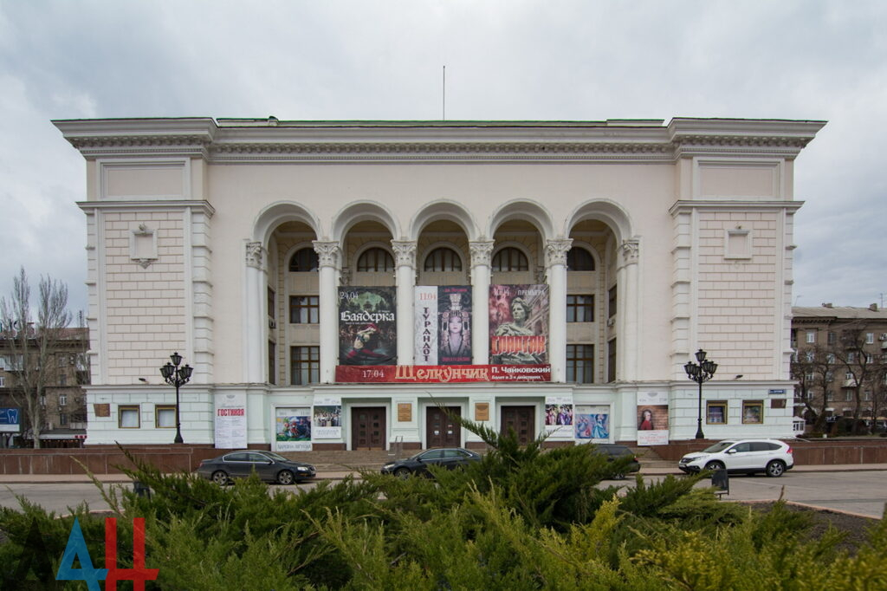

Город и его истории · Донбасс
Донецк — город, который помнит
Город терриконов, широких проспектов, театральных афиш и тенистых парков. Этот учебный проект — попытка собрать воедино важные страницы его прошлого и детали сегодняшней жизни.
Путешествие в историюЧто посмотретьМатериал подготовлен для учебной лабораторной работы. События и расписания могут меняться — сверяйте сведения с организаторами.

Портрет города
Донецк в шести кадрах
Здесь промышленная история соседствует с садами, водой и культурными площадками. Фотографии ниже собраны как небольшая визуальная прогулка.





Актуальная афиша
События ближайших недель
Проверено 9 октября 2026 года по опубликованным афишам городских театров. Указаны предстоящие даты.
«Славянский маршрут»
Вечер живой музыки Евгения Пефтиева в Донецком Новом театре.
Афиша Нового театра →«Пирам и Фисба»
Опера-пародия Джона Фредерика Лэмпа в театральной гостиной Донбасс Оперы.
Афиша театра →«Севильский цирюльник»
Комическая опера Россини; заявлено исполнение на итальянском языке с русскими титрами.
Афиша театра →Расписание отражает опубликованные афиши на дату проверки. Перед посещением проверьте изменения, доступность мест и условия у театра.
С чего начать
Несколько маршрутов по сайту
История поможет увидеть, как поселение при металлургическом заводе стало крупным индустриальным городом. Раздел о городской среде рассказывает о районах, рельефе и транспорте. Культурная страница собирает театры, музеи и людей сцены.
Открыть раздел о городе